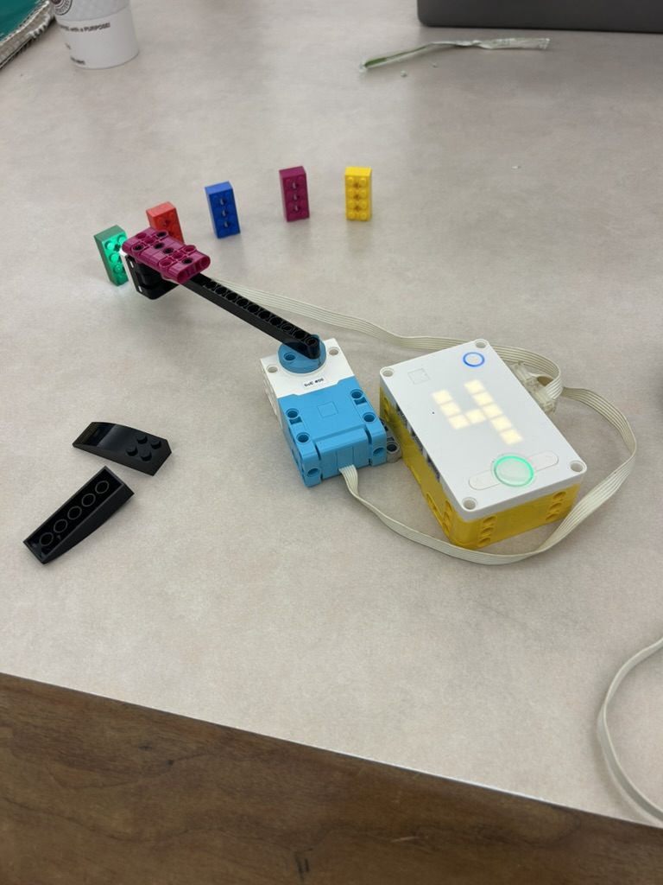

This project uses a LEGO SPIKE robot to demonstrate reinforcement learning through a one-dimensional color search. The robot consists of a motor-driven arm, with the motor connected to port B and a color sensor connected to port D. The arm sweeps along a line of colored LEGO bricks. Using Q-learning and a Q-table of states and actions, the robot learns through trial and error to find a goal brick, such as the green one, while avoiding black boundary bricks.